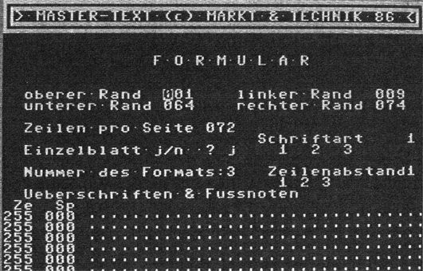

Master-Text voll im Griff (Teil 1)
Mit Master-Text besitzen Sie ein sehr leistungsfähiges Textverarbeitungsprogramm. In diesem Kurs wollen wir Sie mit allen Funktionen vertraut machen, damit Sie das Programm optimal nutzen können.
Da Master-Text eine große Anzahl von Funktionen bietet, ist es gerade für Einsteiger nicht einfach, all diese voll zu nutzen. Auch die Profis unter Ihnen werden nicht zu kurz kommen, denn in den späteren Folgen wird auch auf den Aufbau von Master-Text und die Problematik der Druckertreiber eingegangen.
Die erste Folge wird den Anschluß eines Druckers und dessen Anpassung behandeln. Außerdem werden wir einen ersten kleinen Text schreiben und diesen auch ausdrucken.
Es gibt für den C 64 eine Vielzahl von Druckern, so daß sich jeder den Drucker kaufen kann, der seinen Ansprüchen und seinem Geldbeutel entspricht. Leider ist dies auch mit Nachteilen verbunden, da jeder Drucker seine Eigenheiten hat und nicht unbedingt problemlos mit allen Programmen zusammenarbeitet.
Master-Text ist in dieser Hinsicht sehr flexibel. Bei diesem Programm können viele Parameter an den Drucker angepaßt werden. So können zum Beispiel Steuerzeichen festgelegt, Druckertabellen erstellt, die Geräte- und Sekundäradresse verändert werden und auch das Senden von Texten über die RS232-Schnittstelle ist möglich. Für den Laien sind diese Funktionen zunächst sehr verwirrend. Damit Sie aber gleich schon Ihren ersten Text drucken können, bietet Master-Text schon vier Voreinstellungen an. Laden und starten Sie das Programm »INSTALL«, das sich mit einem Menü meldet. Wenn Sie Besitzer eines Commodore-Druckers oder Kompatiblen sind, so fällt Ihnen die Entscheidung leicht. Wählen Sie Punkt 3 für MPS 801, MPS 803 oder Kompatible. Für MPS 802, VC 1526 oder Kompatible ist Punkt 4 vorgesehen. Falls Sie Ihren Drucker am User-Port betreiben, so wählen Sie Punkt 2. Sollte später kein Ausdruck möglich sein, kann das an einer fehlerhaften Kabelverbindung liegen. Die richtige Steckerbelegung finden Sie in Tabelle 1.
Etwas schwieriger ist die Wahl der Druckerinstallation für diejenigen, die keinen der angesprochenen Drucker besitzen. Hier ist die Option 1 am günstigsten, da sie am meisten Freiheit zur Anpassung läßt. Nachdem Sie sich nun für eine Installation entschieden haben, wird diese auf der Diskette abgespeichert. Im weiteren können Sie Master-Text immer mit dem Programm »LADER« laden.
| User-Port | Funktion | Centronics |
|---|---|---|
| A | GND | 16 |
| B | FLAG-BUSY | 11 |
| C | D0 | 2 |
| D | D1 | 3 |
| E | D2 | 4 |
| F | D3 | 5 |
| H | D4 | 6 |
| J | D5 | 7 |
| K | D6 | 8 |
| L | D7 | 9 |
| M | PA2-STROBE | 1 |
Der nun folgende Abschnitt wendet sich an diejenigen Leser, welche Master-Text abgetippt haben. Diese müssen sich jetzt als erstes ein Formular erstellen. In diesem werden die Werte festgelegt, die das Aussehen des gedruckten Textes bestimmen. Wenn Sie sich im Editor (Texteingabemodus) befinden, so gelangen Sie mit <CTRL+F> ins »Formular«. Auf dem Bildschirm sieht es nun etwas konfus aus. Schaffen wir also zunächst etwas Ordnung: Halten Sie <INST/DEL> gedrückt und drücken Sie gleichzeitig <CRSR>-unten so oft, bis auch das letzte Feld gelöscht ist. Fahren Sie nun mit <CRSR>-oben in das erste Feld. Tragen Sie nun die gleichen Werte, wie in Bild 1 gezeigt, in die Felder ein. Immer wenn Sie ein Feld ausgefüllt haben, gelangen Sie mit <CRSR>-unten in das nächste Feld. Beachten Sie, daß auch die Fußnoten gelöscht sind. Wenn Sie alles noch einmal kontrolliert haben, drücken Sie <RETURN>. Sie befinden sich wieder im Editor. Als erstes müssen Sie das gerade erstellte Formular abspeichern. Schalten Sie mit <F1> ins Hauptmenü und mit <CRSR>-rechts auf den Menüpunkt »SPEICHERN«.

Erstellen des Formulars
Der angewählte Punkt wird jeweils revers dargestellt. Nach <RETURN> erscheint das Speichermenü auf dem Bildschirm. In das Feld, auf dem der Cursor nun steht, tragen Sie »formular« ein. Mit <CRSR>-unten gelangen Sie in das letzte Feld. Geben Sie »f« und <RETURN> ein. Das Diskettenlaufwerk wird sich in Bewegung setzen. Warten Sie bis die Meldung »00, ok, 00, 00« erscheint. Schalten Sie jetzt den Computer kurz aus und wieder an, laden das Programm »LADER«, entfernen das REM in Zeile 90 und speichern das Programm wieder unter dem selben Namen ab. Nach allen diesen Prozeduren haben auch Sie Master-Text in der vollständigen Version, wie es sich auch auf der Leserservice-Diskette befindet, zur Verfügung.
Bevor wir mit dem Schreiben beginnen, noch einige Informationen zum Bildschirmaufbau und der Tastatur: Eine Textzeile ist bis zu 80 Zeichen lang, der Bildschirmausschnitt zeigt jedoch nur einen Ausschnitt von 40 Zeichen. Wenn der Cursor den Bildschirmrand erreicht, wird der ganze Text nach links verschoben, bis das Zeilenende erreicht wird. Sie blicken also wie durch ein 40 x 21 Zeichen großes Fenster auf Ihren Text. Maximal steht Ihnen ein Platz von 80 x 430 Zeichen zur Verfügung. Da der Bildschirm nur einen Ausschnitt dieses Bereichs wiedergibt, wird in der obersten Bildschirmzeile die Zeile und Spalte angezeigt, in der sich der Cursor gegenwärtig befindet. Das erleichtert die Orientierung im Text.
Es ist zu beachten, daß die Tastatur der deutschen DIN-Norm entspricht. Das warf bei einigen Benutzern Probleme auf, so daß darauf noch einmal ausführlich eingegangen werden soll. Bei der deutschen DIN-Tastatur sind im Gegensatz zur Commodore-Tastatur Z und Y vertauscht. Die Umlaute »ü ö ä« befinden sich auf den Tasten <@>, <:>, <;>. Das »ß« ist auf der <+>-Taste zu finden.
Beim Schreiben eines durchgehenden Textes sind mehrere Dinge zu beachten. Wenn die ersten Zeilen frei gelassen werden sollen, benutzt man dazu nicht die Cursor-Tasten, sondern <RETURN>. Bei der Schreibmaschine muß an jedem Zeilenende die Walze zurückgestellt werden, bevor eine neue Zeile begonnen wird. Bei unserem Textprogramm kann dagegen durchgehend Text eingegeben werden. Es sollte am Ende einer Zeile nicht die <RETURN>-Taste benutzt werden, da sonst später kein Druck im Blocksatz möglich ist. Der Drucker ordnet den Text beim späteren Ausdrucken selbständig so, daß ein Zeilenumbruch nur an Leerstellen oder Trennungsvorschlägen stattfindet. Will man einen Absatz beenden, geschieht das mit Hilfe der <RETURN>-Taste.
Absatzende-Zeichen — aber wo?
Dabei ist zu beachten, daß man die Funktion der <RETURN>-Taste nicht mit der Funktion von <SHIFT+RETURN> verwechselt. Dies bewirkt nämlich, daß der Cursor an den Anfang der nächsten Zeile springt, ohne daß das Absatzende-Zeichen (Pfeil nach links) erscheint.
Wollen Sie Text einrücken, so genügt es nicht, entsprechend oft <SPACE> zu betätigen. Der Anfang der Zeile muß mit <SHIFT+SPACE> markiert werden, da der Drucker die Spaces sonst ignoriert. Am Anfang der Bildschirmzeile erscheint ein Sonderzeichen, welches auf die Einrückung hinweist. In diesem Zusammenhang soll auch gleich auf die Funktionen der Tasten <F5>, <SHIFT+CLR/HOME> und <F6> eingegangen werden. Sie dienen dazu, an den Anfang des Textes zu gelangen. Mit der im Anschluß an diesen Kurs vorgestellten Programm-Modifikation kann diese Tastenkombination in Verbindung mit <F1> auch zum Löschen des Textspeichers verwendet werden. Die normale Funktion bleibt erhalten. Mit <F6> gelangen Sie an das Textende.
Wir wollen noch einmal näher auf die Funktion der Cursor-Tasten eingehen. Sie ermöglichen das Umherfahren im Text. Allerdings dauert es verhältnismäßig lange, bis man mit ihrer Hilfe die gewünschte Position erreicht hat. Der Cursor wird nämlich nur Schritt für Schritt über jedes Zeichen vorwärtsbewegt. Daher bietet das Programm noch andere Möglichkeiten, den Cursor zu bewegen. Mit Hilfe der Funktionstasten <F3> und <F4> können Sie wortweise vor- und zurück springen. Noch schneller geht es mit den Tasten <F2> und <F8>. Mit ihnen ist ein schnelles Bewegen durch den Text möglich. Der Cursor fährt mit <F2> entweder 10 Zeilen zurück oder 10 Zeilen vor ( <F8> ). Bei längeren Texten kann man so sehr schnell die gewünschte Stelle erreichen.
Nun kommen wir zu den Möglichkeiten, die das Programm bietet, um den Text zu ändern. Oft müssen nur Rechtschreibfehler korrigiert werden. Dazu brauchen nur die falschen Buchstaben mit den richtigen überschrieben zu werden. Doch was macht man, wenn Buchstaben gelöscht oder eingefügt werden müssen? Dazu stehen zwei Tasten zur Verfügung. Zum Löschen einzelner Buchstaben verwendet man die <INST/DEL>-Taste. Drückt man diese Taste im Normalmodus, so wird das Zeichen vor dem Cursor gelöscht. Hat man während des Tippens den falschen Buchstaben gewählt, drückt man einfach die <INST/DEL>-Taste und tippt dann den richtigen Buchstaben ein.
Mit <SHIFT+INST/DEL> gelangt man in den Einfügemodus. Zu erkennen ist dieser Modus am Schriftzug »INS« in der ersten Zeile des Bildschirms. Jetzt werden alle Buchstaben, die Sie tippen, in den Text eingefügt und die folgenden Zeichen nach rechts verschoben. Im Einfügemodus wird mit <INST/DEL> immer das Zeichen unter dem Cursor gelöscht. Drücken Sie noch einmal <SHIFT+INST/DEL>. Der Schriftzug »INS« erlischt und wir befinden uns wieder im Normalmodus.
Damit haben Sie jetzt schon die wichtigsten Editorfunktionen kennengelernt und sind nun in der Lage, einen Text zu erstellen. Bevor wir unseren Text nun ausdrucken, haben wir die Möglichkeit uns anzusehen, wie der Text in seiner gedruckten Fassung aussehen wird. Dazu drücken wir zuerst die Funktionstaste <F1>. Wir befinden uns im Hauptmenü. In diesem Fall muß der Menüpunkt »DRUCKEN« gewählt werden. Nach zweimaligem Drücken der <RETURN>-Taste erscheint das Druckmenü. Man kann mit Hilfe der Cursor-Tasten zwischen Bildschirm-, 80-Zeichen-Darstellung, Textdruck und Rundschreiben wählen.
Bei der Bildschirmausgabe wird der Text in Zeilen mit einer Länge von 40 Zeichen ausgegeben. Aber hierbei ist zu beachten, daß der Text so nicht ausgedruckt wird. Dazu müssen Sie den 80-Zeichen-Modus anwählen. Auf diese Weise erhalten Sie einen Eindruck, wie der ausgedruckte Text später aussehen wird. Der Text, der sich im 80-Zeichen-Modus von unten nach oben über den Bildschirm bewegt, kann mit der Leertaste angehalten werden. Ein nochmaliges Drücken der Leertaste reicht und der Text setzt sich wieder in Bewegung. Dabei darf die Taste nicht zu kurz angetippt werden. Das liegt daran, daß der Computer gerade bei der 80-Zeichenausgabe ziemlich intensiv damit beschäftigt ist, den Bildschirm hochzuschieben (scrollen). Ein Verändern des Textes ist hier nicht möglich.
Wie schon erwähnt, dient die Funktionstaste <F1> dazu, vom Editor ins Hauptmenü zu gelangen. Ebenso braucht man nach der Anwahl der verschiedenen Menüpunkte nur <F1> zu drücken, und man befindet sich wieder im Hauptmenü. Nach Drücken von <RETURN> kann dann der Editor erreicht werden. Nur in manchen Situationen wirkt die <F1>-Taste nicht. Wenn eine Seite zu Ende gedruckt wurde oder Fehlermeldungen vom Laufwerk auftreten, müssen Sie immer erst die <RETURN>-Taste betätigen, bevor Sie mit <F1> ins Hauptmenü gelangen.
Textdrucken leichtgemacht
Wenn Sie Ihren ersten Text erstellt haben, wollen Sie ihn sicher auch ausdrucken. Hier wählt man die Option »TEXTDRUCK«. Nach <RETURN> erscheint in der untersten Bildschirmzeile die Anzeige »Papier einlegen und RETURN drücken«. Ist das geschehen, besorgt Ihr Drucker das Übrige. Sollte Ihr Text länger als eine Seite sein, so ist am Ende der ersten Seite noch einmal <RETURN> zu betätigen.
Das soll nun erst einmal genügen. Sie haben jetzt bis zur nächsten Folge unseres Kurses Zeit, sich in die besprochenen Funktionen einzuarbeiten. Dort wird die Anpassung der übrigen Drucker mittels der Steuerzeichen- und Druckertabelle besprochen.
(Martin Pahl/sk)Uns haben noch einige wertvolle Tips von Lesern erreicht, die wir Ihnen nicht vorenthalten wollen:
MPS 803 mit Unterlängen
Da der Commodore-Drucker MPS 803 normalerweise keine Unterlängen beherrscht, wurde der Programmteil »UMLAUT1« von Master-Text dahingehend modifiziert, daß auch mit dem MPS 803 ein ansehnliches Schriftbild zu erzielen ist (Listing 1).
Erreicht wird dies dadurch, daß der ganze Druck im »Bit-Image«- also im Grafik-Modus erfolgt. Hierzu wurde der komplette Zeichensatz im Grafik-Format neu definiert und die Routine so verändert, daß nicht nur die deutschen Umlaute, sondern alle Zeichen im Grafikmodus gedruckt werden.
Die Änderung auf Diskette wird folgendermaßen vorgenommen:
- Mit dem RENAME-Befehl das File »UMLAUT1« umbenennen in »UMLAUT1.ALT«
- Die neue UMLAUT1-Routine mit dem MSE eingeben und auf die Master-Text-Diskette abspeichern.
- Master-Text laden, einen Probeausdruck machen und staunen.
Eventuelle Unverträglichkeiten mit Steuerzeichen sind nicht bekannt. Auf was jetzt allerdings verzichtet werden muß, ist der Revers-Druck, was bei einem Textprogramm jedoch nicht allzusehr stören dürfte.
(Thomas Schwarz/sk)Löschen des Textspeichers
Vor dem Laden von Texten mußte bislang der Textspeicher mit insgesamt fünf Befehlen gelöscht werden. Vergaß man dies, und war der neue Text kürzer als der vorher im Speicher befindliche, war Textsalat die Folge.
Durch eine kleine Änderung des Programms »t3« (Listing 2) wird das Löschen des Speichers zur komfortablen Sache:
Nach Drücken von <F1> werden die Tasten <SHIFT+CLR/HOME> betätigt. Die ursprüngliche Funktion der <F1>-Taste, der Sprung in die Menüleiste, bleibt bei zweimaligem Antippen erhalten, ebenso wie die Funktion von <SHIFT+CLR/HOME> im Editormodus.
(Axel Hohlfeld/sk)Name : t3 c000 c3e5 ----------------------------------- c228 : 85 d0 09 4c 57 c2 ea ea ee c230 : ea ea ea ea c9 97 d0 03 4a =================================== c250 : e6 02 38 e9 30 aa 60 20 9d c258 : 42 f1 f0 fb c9 93 d0 03 d1 c260 : 4c 86 c0 a5 33 29 fe 85 58 c268 : 33 4c 98 c0 00 00 00 00 00